/A search
consensus computer
for web3
cyber•Congress: @xhipster, @litvintech, @hleb-albau, @arturalbov, @belya
Notes on euler release of cyber : // protocol reference implementation using Go.
⁄ Glossary
- cyb:
- - nick. a friendly software robot who helps you explore universes
- cyber:
- - noun. a superintelligent network computer for answers
- - verb. to do something intelligent, to be very smart
- cyber://
- - web3 protocol for computing answers and knowledge exchange
- CYB:
- - ticker. transferable token expressing will to become smarter
- CYBER:
- - ticker. non-transferable token expressing intelligence
- CBD:
- - ticker. ERC-20 proto token representing substance from which CYB emerge
- cyberlink:
- - link type. expressing connection from one link to another as link-x.link-y
⁄ Abstract
A consensus computer allows computing of provably relevant answers without opinionated blackbox intermediaries such as Google, Youtube, Amazon or Facebook. Stateless content-addressable peer-to-peer communication networks such as IPFS and stateful consensus computers such as Ethereum provide part of the solution, but there are at least three problems associated with implementation. Of course, the first problem is the subjective nature of relevance. The second problem is that it is hard to scale consensus computer for a huge knowledge graph. The third problem is that the quality of such a knowledge graph will suffer from different attack surfaces such as sybil, selfish behaviour of interacting agents. In this paper, we (1) define a protocol for provable consensus computing of relevance between IPFS objects based on Tendermint consensus of cyber•rank computed on GPU, (2) discuss implementation details and (3) design distribution and incentive scheme based on our experience. We believe the minimalistic architecture of the protocol is critical for the formation of a network of domain-specific knowledge consensus computers. As a result of our work some applications never existed before emerge. We expand the work including our vision on features we expect to work up to Genesis.
⁄ Introduction to web3
Original protocols of the Internet such as TCP/IP, DNS, URL, and HTTPS brought a web into the point where it is now. Along with all the benefits they have created they brought more problem to the table. Globality being a vital property of the web since inception is under real threat. The speed of connections degrades with network grow and from ubiquitous government interventions into privacy and security of web users. One property, not evident in the beginning, become important with everyday usage of the Internet: its ability to exchange permanent hyperlinks thus they would not break after time has passed. Reliance on "one at a time ISP" architecture allows governments effectively censor packets. It is the last straw in a conventional web stack for every engineer who is concerned about the future of our children.
Other properties while being not so critical are very desirable: offline and real-time. Average internet user being offline must have the ability to work with the state it has and after acquiring connection being able to sync with global state and continue to verify state's validity in realtime while having a connection. Now, these properties offered on the app level while such properties must be integrated into lower level protocols.
The emergence of a web3 stack creates an opportunity for a new kind of Internet. We call it web3. It has a promise to remove problems of a conventional protocol stack and add to the web better speed and more accessible connection. However, as usual in a story with a new stack, new problems emerge. One of such problem is general-purpose search. Existing general-purpose search engines are restrictive centralized databases everybody forced to trust. These search engines were designed primarily for client-server architecture based on TCP/IP, DNS, URL and HTTPS protocols. Web3 creates a challenge and opportunity for a search engine based on developing technologies and specifically designed for them. Surprisingly the permission-less blockchain architecture itself allows organizing general purpose search engine in a way inaccessible for previous architectures.
⁄ On adversarial examples problem
Conventional architecture of search engines where one entity process and rank all the shit suffers from one hard but the particular problem that still has not been solved even by brilliant Google scientists:adversarial examples problem. The problem Google acknowledge is that it is rather hard to algorithmically reason either this particular sample is adversarial or not independently on how cool the learning technology is. Obviously, a cryptoeconomic approach can change beneficiaries in this game effectively removing possible sybil attack vectors and removing the necessity to make a decision on example crawling and meaning extraction from one entity to the whole world. Learning sybil-resistant model will probably lead to orders of magnitude more predictive results.
⁄ Cyber protocol at euler
• compute euler inception of cyber protocol based on Satoshi lottery and CBD balances
• def knowledge graph state
• take cyberlinks
• check the validity of signatures
• check bandwidth limit
• check the validity of CIDv0
• if signatures, bandwidth limit, and CIDv0 are ok than cyberlink is valid
• for every valid cyberlink emit prediction as an array of CIDv0
• every round calculate cyber•rank deltas for the knowledge graph
• every round distribute CYB based on defined rules
• apply more secure consensus state based on CBD balances 6 times up to merkle
⁄ Knowledge graph
We represent a knowledge graph as a weighted graph of directed links between content addresses or content identifications or CIDs. In this paper, we will use them as synonyms.
Content addresses are essentially a web3 links. Instead of using nonobvious and mutable thing:
github.com/cosmos/cosmos/blob/master/WHITEPAPER.md
we can use pretty much exact thing:
Qme4z71Zea9xaXScUi6pbsuTKCCNFp5TAv8W5tjdfH7yuHhttps
Using content addresses for building a knowledge graph we get so much needed superpowers of ipfs-like p2p protocols for a search engine
• mesh-network future proof
• interplanetary
• tolerant
• accessible
• technology agnostic
Web3 agents generate our knowledge graph. Web3 agents include itself to the knowledge graph by transacting only once. Thereby they prove the existence of private keys for content addresses of revealed public keys.
Our euler implementation is based on cosmos-sdk identities and cidv0 content addresses.
Web 3 agents generate knowledge graph by applying cyberlinks.
⁄ Cyberlinks
To understand cyberlinks, we need to understand the difference between URL link and IPFS link. URL link points to the location of content, but IPFS link point to the content itself. The difference in web architecture based on location links and content links is drastical, hence require new approaches.
Cyberlink is an approach to link two content addresses semantically.
QmdvsvrVqdkzx8HnowpXGLi88tXZDsoNrGhGvPvHBQB6sH. QmdSQ1AGTizWjSRaVLJ8Bw9j1xi6CGLptNUcUodBwCkKNS
This cyberlink means that cyberd presentation on cyberc0n is referencing Tezos whitepaper.
A concept of cyberlink is a convention around simple semantics of communication format in any peer to peer network:
<content-address x>.<content-address y> </content-address>
You can see that cyberlink represents a link between two links. Easy peasy!
Cyberlink is a simple yet powerful semantic construction for building a predictive model of the universe.
Cyberlinks can form link chains if exist a series of two cyberlinks from one agent in which the second link in the first cyberlink is equal to the first link in the second cyberlink:
- <content-address x>.<content-address y> </content-address>
- <content-address y>.<content-address z> </content-address>
Using this simple principle, all interacting agents can reach consensus around interpreting clauses. So link chains are helpful for interpreting rich communications around relevance.
Also using the following link:
QmNedUe2wktW65xXxWqcR8EWWssHVMXm3Ly4GKiRRSEBkn
the one can signal the start and stop of execution in the knowledge graph.If web3 agents expand native IPFS links with something semantically richer as DURA links than web3 agents can easier to reach consensus on the rules for program execution.
Indeed, DURA protocol is a proper implementation of a cyberlinks concept.
euler implementation of cyberlinks based on DURA specification is available in .cyber app of browser cyb.
Based on cyberlinks we can compute the relevance of subjects and objects in a knowledge graph. That is why we need a consensus computer.
⁄ Notion of consensus computer
Consensus computer is an abstract computing machine that emerges from agents interactions.
A consensus computer has a capacity in terms of fundamental computing resources such as memory and computing. To interact with agents, a computer needs a bandwidth.
Ideal consensus computer is a computer in which:
- the sum of all *individual agents* computations and memory
- is equal to
- the sum of all verified by agents computations and memory of a *consensus computer*
We know that:
verifications of computations < computations + verifications of computations
Hence we will not be able to achieve an ideal consensus computer ever. CAP theorem and scalability trilemma also prove this statement.
However, this theory can work as a performance indicator of a consensus computer.
The euler implementation is a 64-bit consensus computer of the relevance for 64-byte string space that is as far from ideal at least as 1/146.
We must bind computational, storage and bandwidth supply of relevance machine with maximized demand of queries. Computation and storage in case of basic relevance machine can be easily predicted based on bandwidth, but bandwidth requires a limiting mechanism.
Bandwidth limiting mechanism is work in progress. Current notes on implementation are in the docs.
So agents must have CYB tokens in accordance to their will of learning the knowledge graph. However, proposed mechanics of CYB tokens work not only as spam protection but as the economic regulation mechanism to align the ability of validators to process knowledge graph and market demand for processing.
⁄ Relevance machine
Relevance machine is a machine that transition knowledge graph state based on some reputation score of agents.
This machine enables simple construction for search question querying and answers delivering.
The reputation score is projected on every agent's cyberlink. A simple rule prevents agents abuse: one content address can be voted by a token only once. So it does not matter for ranking from how much accounts you voted. The only sum of their balances matters.
A useful property of a relevance machine is that it must have inductive reasoning property or follows the blackbox principle.
- She must be able to interfere predictions
- without any knowledge about objects
- except who linked, when linked and what was linked.
If we assume that a consensus computer must have some information about linked objects the complexity of such model growth unpredictably, hence a requirement for a computer for memory and computations. That is, deduction of meaning inside consensus computer is expensive thus our design depends on the blindness assumption. Instead of deducting a meaning inside consensus computer we design a system in which meaning extraction is incentivized because agents need CYB to compute relevance.
Also, thanks to content addressing the relevance machine following the blackbox principle do not need to store the data but can effectively operate on it.
Human intelligence organized in a way to prune none-relevant and none-important memories with time has passed. The same way can do relevance machine
Also, one useful property of relevance machine is that it needs to store neither past state nor full current state to remain useful, or more precisely: relevant.
So relevance machine can implement aggressive pruning strategies such as pruning all history of knowledge graph formation or forgetting links that become non-relevant.
The pruning group of features can be implemented in nash.
euler implementation of relevance machine is based on the most straightforward mechanism which is called cyber•Rank.
⁄ cyber•Rank
Ranking using consensus computer is hard because consensus computers bring serious resource bounds. e.g. Nebulas still fail to deliver something useful on-chain. First, we must ask ourselves why do we need to compute and store the rank on-chain, and not go Colony or Truebit way?
If rank computed inside consensus computer, you have an easy content distribution of the rank as well as an easy way to build provable applications on top of the rank. Hence we decided to follow more cosmic architecture. In the next section, we describe the proof of relevance mechanism which allows the network to scale with the help of domain-specific relevance machines that works in parallel.
Eventually, relevance machine needs to find (1) deterministic algorithm that allows computing a rank for a continuously appended network to scale the consensus computer to orders of magnitude that of Google. Perfect algorithm (2) must have linear memory and computation complexity. The most importantly it must have (3) highest provable prediction capabilities for the existence of relevant links.
After some research, we found that we can not find silver bullet here. We find an algorithm that probably satisfies our criteria: SpringRank. An original idea of the algorithm came to Caterina from physics. Links represented as a system of springs with some energy, and the task of computing the ranks is the task of finding a relaxed state of springs.
However, we got at least 3 problems with SpringRank:
- We were not able to implement it on-chain fast using Go in euler.
- We were not able to prove it for knowledge graph because we did not have provable knowledge graph yet.
- Also, we were not able to prove it by applying it for the Ethereum blockchain during computing the genesis file for euler. It could work, but for the time being it is better to call this kind of distribution a lottery.
So we decided to find some more basic bulletproof way to bootstrap the network: a rank from which Lary and Sergey have bootstrapped a previous network. The problem with original PageRank is that it is not resistant to sybil attacks.
Token weighted PageRank limited by token-weighted bandwidth do not have inherent problems of naive PageRank and is resistant to sybil attacks. For the time being, we will call it cyber•Rank until something better emerge.
In the centre of spam protection system is an assumption that write operations can be executed only by those who have a vested interest in the evolutionary success of a relevance machine. Every 1% of stake in consensus computer gives the ability to use 1% of possible network bandwidth and computing capabilities.
As nobody uses all possessed bandwidth, we can safely use 10x fractional reserves with 2-minute recalculation target.
We would love to discuss the problem of vote buying mainly. Vote buying by itself is not such bad. The problem with vote buying appears in the systems where voting affects the allocation of inflation in the system like Steem or any state-based system. So vote buying can become easily profitable for adversary employing a zero-sum game without a necessity to add value. Our original idea of a decentralized search was based on this approach, but we reject this idea completely removing incentive on consensus level for knowledge graph formation completely. In our setting in which every participant must bring some value to the system to affect predictive model vote buying become NP-hard problem hence is useful for the system.
To switch from one algorithm to another, we are going to make simulations and experiment with economic a/b testing based on winning chains through hard spoons.
Consensus computer based on relevance machine for cyber•Rank can answer and deliver relevant results for any given search request in the 64 byte CID space. However, to build a network of domain-specific relevance machines, it is not enough. Consensus computers must have the ability to prove relevance for each other.
⁄ Proof of relevance
Proof of relevance We design a system under the assumption that regarding search such thing as bad behaviour does not exist as anything bad can be in the intention of finding answers. Also, this approach significantly reduces attack surfaces.
Ranks are computed on the only fact that something has been searched, thus linked and as a result, affected the predictive model.
A good analogy is observing in quantum mechanics. That is why we do not need such things as negative voting. Doing this we remove subjectivity out of the protocol and can define proof of relevance.
Rank state = rank values stored in a one-dimensional array and merkle tree of those values
Each new CID gets a unique number. The number starts from zero and incrementing by one for each new CID. So that we can store rank in a one-dimensional array where indices are CID numbers.
Merkle Tree calculated based on RFC-6962 standard. Since rank stored in a one-dimensional array where indices are CID numbers (we could say that it ordered by CID numbers) leaves in merkle tree from left to right are SHA-256 hashes of rank value. Index of the leaf is CID number. It helps to easily find proofs for specified CID (log n iterations where n is a number of leaves).
To store merkle tree is necessary to split the tree into subtrees with a number of leaves multiply of the power of 2. The smallest one is obviously subtree with only one leaf (and therefore height == 0). Leaf addition looks as follows. Each new leaf is added as subtree with height == 0. Then sequentially merge subtrees with the same height from right to left
Example:

To get merkle root hash - join subtree roots from right to left.
Rank merkle tree can be stored differently:
Full tree - all subtrees with all leaves and intermediary nodes
Short tree - contains only subtrees roots
The trick is that full tree is only necessary for providing merkle proofs. For consensus purposes and updating tree, it's enough to have a short tree. To store merkle tree in database use only a short tree. Marshaling of a short tree with n subtrees (each subtree takes 40 bytes):
<subtree_1_root_hash_bytes> <subtree_1_height_bytes>
....
<subtree_n_root_hash_bytes> <subtree_n_height_bytes>
For 1,099,511,627,775 leaves short tree would contain only 40 subtrees roots and take only 1600 bytes.
Let us denote rank state calculation:
p - rank calculation period
lbn - last confirmed block number
cbn - current block number
lr - length of rank values array
For rank storing and calculation we have two separate in-memory contexts:
- Current rank context. It includes the last calculated rank state (values and merkle tree) plus all links and user stakes submitted to the moment of this rank submission.
- New rank context. It's currently calculating (or already calculated and waiting for submission) rank state. Consists of new calculated rank state (values and merkle tree) plus new incoming links and updated user stakes.
Calculation of new rank state happens once per p blocks and going in parallel.
The iteration starts from block number that ≡ 0 (mod p) and goes till next block number that ≡ 0 (mod p).
For block number cbn ≡ 0 (mod p) (including block number 1 cause in cosmos blocks starts from 1):
- Check if the rank calculation is finished. If yes then go to (2.) if not - wait till calculation finished (actually this situation should not happen because it means that rank calculation period is too short).
- Submit rank, links and user stakes from new rank context to current rank context.
- Store last calculated rank merkle tree root hash.
- Start new rank calculation in parallel (on links and stakes from current rank context).
For each block:
- All links go to a new rank context.
- New coming CIDs gets rank equals to zero. We could do it by checking last CIDs number and lr (it equals the number of CIDs that already have rank). Then add CIDs with number >lr to the end of this array with the value equal to zero.
- Update current context merkle tree with CIDs from the previous step
- Store latest merkle tree from current context (let us call it last block merkle tree).
- Check if new rank calculation finished. If yes go to (4.) if not go to next block.
- Push calculated rank state to new rank context. Store merkle tree of newly calculated rank.
To sum up. In current rank context, we have rank state from last calculated iteration (plus, every block, it updates with new CIDs). Moreover, we have links and user stakes that are participating in current rank calculation iteration (whether it finished or not). The new rank context contains links and stakes that will go to next rank calculation and newly calculated rank state (if a calculation is finished) that waiting for submitting.
If we need to restart node firstly, we need to restore both contexts (current and new). Load links and user stakes from a database using different versions:
- Links and stakes from last calculated rank version v = lbn - (lbn mod n) go to current rank context.
- Links and stakes between versions v and lbn go to new rank context.
Also to restart node correctly, we have to store following entities in database:
- Last calculated rank hash (merkle tree root)
- A newly calculated rank short merkle tree
- Last block short merkle tree
With last calculated rank hash and newly calculated rank merkle tree we could check if the rank calculation was finished before node restart. If they are equal, then rank wasn't calculated, and we should run the rank calculation. If not we could skip rank calculation and use newly calculated rank merkle tree to participate in consensus when it comes to block number cbn ≡ 0 (mod p) (rank values will not be available until rank calculation happens in next iteration. Still validator can participate in consensus so nothing bad).
Last block merkle tree necessary to participate in consensus till the start of next rank calculation iteration. So, after the restart we could end up with two states:
- Restored current rank context and new rank context without rank values (links, user stakes, and merkle tree).
- Restored current rank context without rank values. Restored new rank context only with links and user stakes.
A node can participate in consensus but cannot provide rank values (and merkle proofs) till two rank calculation iterations finished (current and next).
Search index should be run in parallel and do not influence the work of the consensus machine. The validator should be able to turn off index support. Maybe even make it a separate daemon.
Base idea. Always submit new links to index and take rank values from current context (insert in sorted array operation). When a new rank state is submitted trigger index to update rank values and do sortings (in most cases new arrays will be almost sorted).
Need to solve the problem of adjusting arrays capacity (not to copy arrays each time newly linked cid added). A possible solution is to adjust capacity with reserve before resorting array.
Todo: Therefore for building index, we need to find a sorting algorithm that will be fast on almost sorted arrays. Also, we should implement it for GPU so it should better be parallelizable: Mergesort(Timsort), Heapsort, Smoothsort ...
Now we have proof of rank of any given content address. While the relevance is still subjective by nature, we have a collective proof that something was relevant for some community at some point in time.
For any given CID it is possible to prove the relevance
Using this type of proof any two IBC compatible consensus computers can proof the relevance to each other so that domain-specific relevance machines can flourish. Thanks to inter-blockchain communication protocol you basically can launch your own domain-specific search engine either private or public by forking cyberd which is focused on the common public knowledge. So in our search architecture, domain-specific relevance machine can learn from common knowledge. We are going to work on IBC during smith implementation.
In our relevance for commons euler implementation proof of relevance root hash is computed on Cuda GPUs every round.
⁄ Speed and scalability
We need speedy confirmation times to feels like the usual web app. It is a strong architecture requirement that shape an economic topology and scalability of the cyber protocol.
Proposed blockchain design is based on Tendermint consensus algorithm with 146 validators and has very fast 1 second finality time. Average confirmation timeframe at half the second with asynchronous interaction make complex blockchain search almost invisible for agents.
Let us say that our node implementation based on cosmos-sdk can process 10k transactions per second. Thus every day at least 8.64 million agents can submit 100 cyberlinks each and impact results simultaneously. That is enough to verify all assumptions in the wild. As blockchain technology evolves we want to check that every hypothesis work before scale it further. Moreover, proposed design needs demand for full bandwidth in order the relevance become valuable. That is why we strongly focus on accessible, but provable distribution to millions from inception.
⁄ Implementation in a browser
Implementation in a browser We wanted to imagine how that could work in a web3 browser. To our disappointment we was not able to find the web3 browser that can showcase the coolness of the proposed approach in action. That is why we decide to develop the web3 browser cyb that has sample application .cyber for interacting with cyber:// protocol.
⁄ From Inception to Genesis
It is trivial to develop euler like proof-of-concept implementation, but it is hard to achieve stable protocol merkle a lot of CYB value on which can exist. euler is Inception that already happened, merkle is Genesis that is far away. That is why we decide to innovate a bit on the going main net process. We do not have CYB balances and rank guaranties before merkle but we can have exponentially growing semantic core which can be improved based on measurements and observations during development and gradual transfer of value since euler. So think that Genesis or merkle is very stable and can store semantic core and value, but all releases before can store the whole semantic core and only part of the value you would love to store due to weak security guarantees. The percents of CYB value to be distributed based on CBD balances:
euler = 1
smith = 4
darwin = 8
turing = 15
nash = 21
weiner = 25
merkle = 27
To secure the value of CYB before Genesis 100 CBD ERC-20 tokens are issued by cyberFoundation. So snapshot balances are computed 7 times based on CBD.
Essentially CBD substance is distributed by cyberFoundation in the following proportion:
- Proof-of-use: 70% is allocated to web3 agents according to some probabilistic algorithm. E.g., first euler proof-of-use distribution we call Satoshi Lottery is allocated to key owned Ethereum addresses based on ongoing research. First allocation is based on SpringRank.
- Proof-of-code: 15% is allocated for direct contribution to the code base. E.g., as assigned by cyberFoundation to cyberCongress contribution including team is 11.2% and the other 3.8% allocated to developers community projects such as Gitcoin community and cyberColony based experimental organization.
- Proof-of-value: 15% is allocated for a direct contribution of funds. 8% of this value either has been already contributed nor has some reservation for ongoing contributions by close friends and 7% is going to be distributed during Eos-like auction not defined precisely yet. All contribution from the auction will go to Aragon based cyberFoundation and will be managed by CBD token holders.
Details of code and value distribution can be produced by cyberFoundation.
Except for 7 CBD based distributions, CYB tokens can be created only by validators based on staking and slashing parameters. The basic consensus is that newly created CYB tokens are distributed to validators as they do the essential work to make relevance machine run both regarding energy consumed for computation and cost for storage capacity. So validators decide where the tokens can flow further.
⁄ Validators incentive
Validators are the essential building block of the proposed architecture. Hence we want to bring them a better incentive to participate before the main net. In our case validators will compute and process requests for billions edge knowledge graph hence it would be naive to expect that it is possible to expect to prepare such a network for production for free. In the beginning, inflation must be high enough to compensate risks of early investments into the ecosystem.
This is approximation of year inflation expressed in percents defined for testnets:
euler = 200
smith = 134
darwin = 90
turing = 60
nash = 40
weiner = 27
merkle = 18
The scheme motivates developers to release earlier to be less diluted from holding CBD and honour validators if development is going slower than expected.
After Genesis starting inflation rate will become fixed at 1 000 000 000 CYB per block.
Once we have validators, we can think about first million web3 agents.
⁄ Satoshi Lottery
Satoshi Lottery is the inception version of the proof-of-use distribution that already happens in the tenth birthday of Bitcoin Genesis at 3 Jan 2019. It is a highly experimental way of provable distribution. The basic idea is that a comprehensive set of agents receive CYB tokens because they behave well. The basic algorithm is of 5 steps:
- - Compute SpringRank for Ethereum addresses
- - Sort by SpringRank
- - Filter top 1M addresses by SpringRank
- - Compute CYB balances based on CBD
- - Create genesis for cyber protocol
Translation todo: Tolik's article have to be translated here.
Next test net we will improve the logic of the lottery based on received data and repeat this every test net until Genesis.
Soon you will be able to verify either you were lucky enough to receive CYB or not just searching your ethereum address. If you were, you will be able to claim CYB even without compromising your Ethereum keys.
⁄ Inception
The genesis file for euler containing lottery results and CBD based distribution has the following cid:
Qma5U4joYWEf41ku16g9cQr6fADsxCPsiWeYZBxpnpu1D4
132307 accounts with 8 274 000 000 000 000 CYB tokens has been created in Inception of the network.
Amount of created tokens is consist of the following sources:
- 1% of CYB value allocated to euler testnet based on proof-of-use distribution as planned
- 0.7% of CYB value allocated to euler testnet based on proof-of-value and proof-of-code distribution except 11.8 CBD due to bug. Appropriate corrections will be done during scheduled hardfork.
⁄ Possible applications
A lot of cool applications can be built on top of proposed architecture:
Web3 browsers. It easy to imagine the emergence of a full-blown blockchain browser. Currently, there are several efforts for developing browsers around blockchains and distributed tech. Among them are Beaker, Mist, Brave, and Metamask. All of them suffer from trying to embed web2 in web3. Our approach is a bit different. We consider web2 as the unsafe subset of web3. That is why we decide to develop a web3 browser that can showcase the cyber approach to answer questions better.
Programmable semantic cores. Currently, the most popular keywords in a gigantic semantic core of Google are keywords of apps such as youtube, facebook, github, etc. However, developers have very limited possibility to explain Google how to better structure results. The cyber approach brings this power back to developers. On any given user input string in any application relevant answer can be computed either globally, in the context of an app, a user, a geo or in all of them combined.
Search actions. Proposed design enable native support for blockchain asset related activity. It is trivial to design applications which are (1) owned by creators, (2) appear right in search results and (3) allow a transact-able call to actions with (4) provable attribution of a conversion to search query. e-Commerce has never been so easy for everybody.
Offline search. IPFS make possible easy retrieval of documents from surroundings without a global internet connection. cyberd can itself can be distributed using IPFS. That creates a possibility for ubiquitous offline search.
Command tools. Command line tools can rely on relevant and structured answers from a search engine. That practically means that the following CLI tool is possible to implement
>cyberd earn using 100 gb hdd
Enjoy the following predictions:
- - apt install go-filecoin: 0.001 BTC per month per GB
- - apt install siad: 0.0001 BTC per month per GB
- - apt install storjd: 0.00008 BTC per month per GB
According to the best prediction, I made a decision try `mine go-filecoin`
Git clone ...
Building go-filecoin
Starting go-filecoin
Creating a wallet using @xhipster seed
You address is ....
Placing bids ...
Waiting for incoming storage requests ...
Search from CLI tools will inevitably create a highly competitive market of a dedicated semantic core for bots.
Autonomous robots. Blockchain technology enables the creation of devices which can earn, store, spend and invest digital assets by themselves.
If a robot can earn, store, spend and invest she can do everything you can do
What is needed is a simple yet powerful state reality tool with the ability to find particular things. cyberd offers minimalistic but continuously self-improving data source that provides necessary tools for programming economically rational robots. According to top-10000 english words the most popular word in English is defined article the that means a pointer to a particular thing. That fact can be explained as the following: particular things are the most important for us. So the nature of our current semantic computing is to find unique things. Hence the understanding of unique things become essential for robots too.
Language convergence. A programmer should not care about what language do the user use. We don't need to know about what language user is searching in. Entire UTF-8 spectrum is at work. A semantic core is open so competition for answering can become distributed across different domain-specific areas, including semantic cores of different languages. The unified approach creates an opportunity for cyber•Bahasa. Since the Internet, we observe a process of rapid language convergence. We use more truly global words across the entire planet independently of our nationality, language and race, Name the Internet. The dream of truly global language is hard to deploy because it is hard to agree on what means what. However, we have the tools to make that dream come true. It is not hard to predict that the shorter a word, the more its cyber•rank will be. Global publicly available list of symbols, words, and phrases sorted by cyber•rank with corresponding links provided by cyberd can be the foundation for the emergence of genuinely global language everybody can accept. Recent scientific advances in machine translation are breathtaking but meaningless for those who wish to apply them without Google scale trained model. Proposed cyber•rank offers precisely this.
This is sure not the exhaustive list of possible applications but very exciting, though.
⁄ Economic protection is smith
About private knowledge on relevance. Explain the difference between private cyberlinks and private relevance machines.
The plan for learning the beast. How cyberlink ipfs, wiki, bitcoin and ethereum?
⁄ Ability to evolve is darwin
About the importance of alternative implementation.
⁄ Turing is about computing more
Ability to programmatically extend state based on proven knowledge graph is of paramount importance. Thus we consider that WASM programs will be available for execution in cyber consensus computer on top of knowledge graph.
Our approach to the economics of consensus computer is that users buy an amount of RAM, CPU, and GPU as they want to execute programs. OpenCypher or GraphQL like language can be provided to explore semantics of the knowledge graph. The following list is simple programs we can envision that can be built on top of simple relevance machine.
Self prediction. A consensus computer can continuously build a knowledge graph by itself predicting the existence of cyberlinks and applying these predictions to a state of itself. Hence a consensus computer can participate in the economic consensus of the cyber protocol.
Universal oracle. A consensus computer can store the most relevant data in the key-value store, where the key is cid and value is bytes of actual content. She is doing it by making a decision every round about which cid value she want to prune and which she wants to apply based on the utility measure of content addresses in the knowledge graph. To compute utility measure validators check availability and size of content for the top-ranked content address in the knowledge graph, then weight on the size of cids and its ranks. The emergent key-value store will be available to write for consensus computer only and not agents, but values can be used in programs.
Proof of location. It is possible to construct cyberlinks with proof-of-location based on some existing protocol such as Foam. So location-based search also can become provable if web3 agents will mine triangulations and attaching proof of location for every link chain.
Proof of web3 agent. Agents are a subset of content addresses with one fundamental property: consensus computer can prove the existence of private keys for content addresses for the subset of knowledge graph even if those addresses has never transacted in its own chain. Hence it is possible to compute much provable stuff on top of that knowledge. E.g., some inflation can be distributed to addresses that have never transacted in the cyber network but have the provable link.
Motivation for read requests. It would be great to create cybernomics not only for write requests to consensus computer but from read requests also. So read requests can be two order of magnitude cheaper, but guaranteed. Read requests to a search engine can be provided by the second tier of nodes which earn CYB tokens in state channels. We consider implementing state channels based on HTLC and proof verification which unlocks amount earned for already served requests.
Prediction markets on link relevance. We can move the idea further by the ranking of knowledge graph based on prediction market on links relevance. An app that allow betting on link relevance can become a unique source of truth for the direction of terms as well as motivate agents to submit more links.
Private cyberlinks. Privacy is foundational. While we are committed to privacy achieving implementation of private cyberlinks is unfeasible for our team up to Genesis. Hence it is up to the community to work on wasm programs that can be executed on top of the protocol. The problem is to compute cyberRank based on cyberlink submitted by a web3 agent without revealing neither previous request nor public keys of a web3 agent. Zero-knowledge proofs, in general, are very expensive. We believe that privacy of search should be must by design, but not sure that we know how to implement it. Coda like recursive snarks and mimblewimble constructions, in theory, can solve part of the privacy issue, but they are new, untested and anyway will be more expensive regarding computations than a transparent alternative.
⁄ In a search for equilibria is nash
We need to find answers for a lot of hard questions regarding consensus variables and its default values. So we decide to stick to a community generated feedback on the road to Genesis and continuously adjust them to keep going better.
On scalability trilemma ...
Decentralization comes with costs and slowness. We want to find a good balance between speed, reliance, and ability to scale, as we believe all three are sensitive for widespread web3 adoption.
That is the area of research for us now. We need real economic measurements to apply a scientific method for this class of challenges.
⁄ On faster evolution at weiner
The primary purpose of wiener stage is to be able to update the consensus of a network from a consensus computer state using some on-chain upgrade mechanism.
Evolvability and governance are connected tightly.
Ability to reflect input from the world and output changes of itself is an essential evolutionary feature. Hence, thanks to cosmos-sdk euler implementation have basic but compelling features such as on-chain voting with vetos and abstain that drastically simplified open discussions for a change. So we are going to use this feature from the inception of the network.
However, we can go in a different direction than cosmos-sdk offers. Following ideas from Tezos in weiner we can define the current state of a protocol as the immutable content address that included in round merkle root.
Also instead of formal governance procedure, we would love to check the hypothesis that changing state of a protocol is possible indeed using relevance machine itself.
Starting protocol can be as simple as follows:
The closer some content address to QmRBKYsQ4FPEtHeGBRuUZEfNXQfvNiJFXvbyrdF4Y7pqfh the more probability that it becomes the winning during an upgrade. The closest protocol to cyber-protocol-current is the protocol which is the most relevant to users.
Hence it is up to nodes to signal cyber-protocol-current by sending cyberlinks with semantics like
<cQmRBKYsQ4FPEtHeGBRuUZEfNXQfvNiJFXvbyrdF4Y7pqfh> <cid-of-protocol>.
⁄ Genesis is secure as merkle
We define and implement a protocol for provable communications of consensus computers on relevance. The protocol is based on a simple idea of content defined knowledge graphs which are generated by web3 agents using cyberlinks. Cyberlinks are processed by a consensus computer using a concept we call relevance machine. euler consensus computer is based on CIDv0 and uses go-ipfs and cosmos-sdk as a foundation. IPFS provide significant benefits regarding resources consumption. CIDv0 as primary objects are robust in its simplicity. For every CIDv0 cyber•rank is computed by a consensus computer with no single point of failure. Cyber•rank is CYB weighted PageRank with economic protection from sybil attacks and selfish voting. Every round merkle root of the rank tree is published so every computer can prove to any computer a relevance value for a given CID. Sybil resistance is based on bandwidth limiting. Embedded ability to execute programs offer inspiring apps. Starting primary goal is indexing of peer-to-peer systems with self-authenticated data either stateless, such as IPFS, Swarm, DAT, Git, BitTorrent, or stateful such as Bitcoin, Ethereum and other blockchains and tangles. Proposed semantics of linking offers a robust mechanism for predicting meaningful relations between objects by a consensus computer itself. The source code of a relevance machine is open source. Every bit of data accumulated by a consensus computer is available for everybody if the one has resources to process it. The performance of proposed software implementation is sufficient for seamless user interactions. Scalability of proposed implementation is enough to index all self-authenticated data that exist today and serve it to millions of web3 agents. The blockchain is managed by a decentralized autonomous organization which functions under Tendermint consensus algorithm with standard governance module. Thought a system provide necessary utility to offer an alternative for conventional search engines it is not limited to this use case either. The system is extendable for numerous applications and, e.g. makes it possible to design economically rational self-owned robots that can autonomously understand objects around them.
⁄ Conclusion
We define and implement a protocol for provable communications of consensus computers on relevance. The protocol is based on a simple idea of content defined knowledge graphs which are generated by web3 agents using cyberlinks. Cyberlinks are processed by a consensus computer using a concept we call relevance machine. euler consensus computer is based on CIDv0 and uses go-ipfs and cosmos-sdk as a foundation. IPFS provide significant benefits regarding resources consumption. CIDv0 as primary objects are robust in its simplicity. For every CIDv0 cyber•rank is computed by a consensus computer with no single point of failure. Cyber•rank is CYB weighted PageRank with economic protection from sybil attacks and selfish voting. Every round merkle root of the rank tree is published so every computer can prove to any computer a relevance value for a given CID. Sybil resistance is based on bandwidth limiting. Embedded ability to execute programs offer inspiring apps. Starting primary goal is indexing of peer-to-peer systems with self-authenticated data either stateless, such as IPFS, Swarm, DAT, Git, BitTorrent, or stateful such as Bitcoin, Ethereum and other blockchains and tangles. Proposed semantics of linking offers a robust mechanism for predicting meaningful relations between objects by a consensus computer itself. The source code of a relevance machine is open source. Every bit of data accumulated by a consensus computer is available for everybody if the one has resources to process it. The performance of proposed software implementation is sufficient for seamless user interactions. Scalability of proposed implementation is enough to index all self-authenticated data that exist today and serve it to millions of web3 agents. The blockchain is managed by a decentralized autonomous organization which functions under Tendermint consensus algorithm with standard governance module. Thought a system provide necessary utility to offer an alternative for conventional search engines it is not limited to this use case either. The system is extendable for numerous applications and, e.g. makes it possible to design economically rational self-owned robots that can autonomously understand objects around them.
⁄ References
- cyberd
- Scholarly context adrift
- Web3 stack
- Search engines information retrieval in practice
- Motivating game for adversarial example research
- An idea of decentralized search
- IPFS
- DAT
- cosmos-sdk
- CIDv0
- Bandwidth in cyber network
- Thermodynamics of predictions
- DURA
- Nebulas
- Colony
- Truebit
- SpringRank
- PageRank
- RFC-6962
- IBC protocol
- Tendermint
- Comparison of web3 browsers
- Cyb
- CBD
- cyberFoundation in Aragon
- How to become validator in cyber protocol
- Tolik's article on Satoshi Lottery
- Top 10000 english words
- Multilingual neural machine translation
- Foam
- Coda
- Mimblewimble
- Tezos